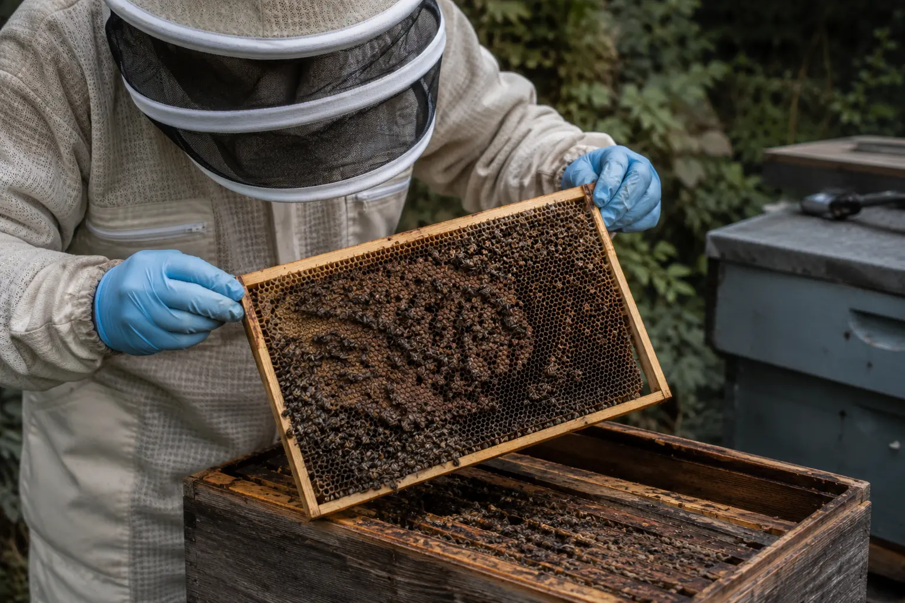
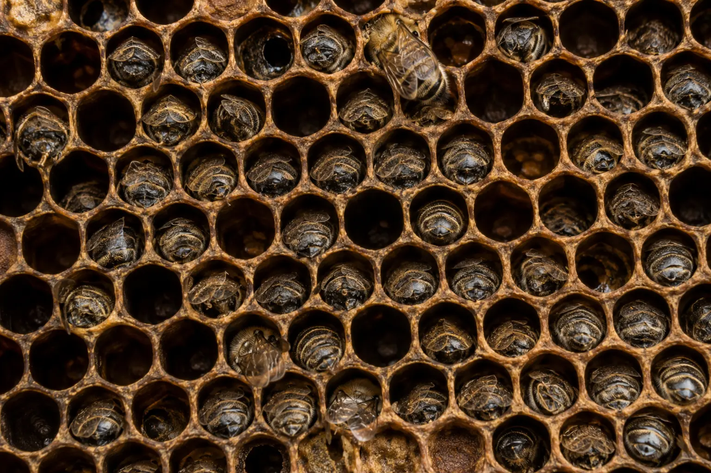
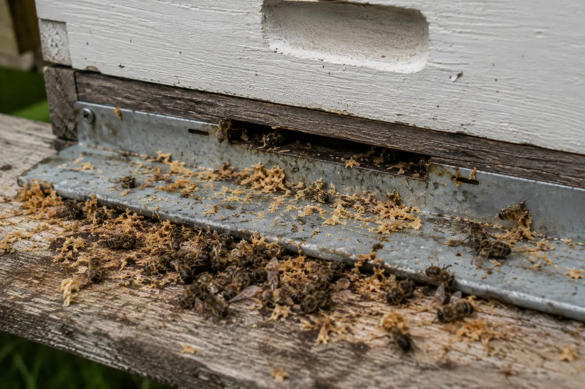

Dead bees and colony loss
Sudden Colony Death: Why Has My Hive Died?
Last updated: 15 August 2026

Finding a colony dead or nearly dead can be upsetting, especially when it seemed normal recently. Sudden colony death can be linked to starvation, varroa collapse, poisoning, robbing, queen failure, disease, weather stress or a combination of factors.
The aim is not to guess from one sign. A dead colony needs to be read like a set of clues: where the bees died, whether food was present, what the brood looked like, whether the entrance shows fighting or dead bees, and what was happening in the colony before the loss.
This guide helps you work through the main causes before you clear the hive, reuse equipment or assume the loss was unavoidable.
First checks before deciding the cause
Start by looking at where the bees are. Dead bees inside the hive, dead bees outside the entrance, a tight cluster on the comb, or very few bees remaining all point in different directions.
Check whether bees died with their heads inside cells and whether there was food close to the cluster. A colony can die of starvation even when stores are elsewhere in the hive if the cluster could not reach them.
Look for varroa and virus signs, including deformed wings, crawling bees, poor brood pattern or a colony that had been weakening before the loss. Also check for robbing signs, wax debris, torn cappings, wasps, damp, mould, suspicious brood and recent chemical exposure nearby.
Common causes of sudden colony death
Most colony losses are not explained by one neat answer. Starvation, varroa, weak colony strength, poor weather and queen issues can overlap. For example, a colony weakened by varroa may be less able to defend against robbing, maintain brood temperature or survive winter.
Work through each likely cause methodically. Do not assume that visible honey rules out starvation, and do not assume a pile of dead bees automatically means poisoning. The pattern matters more than one single clue.
Starvation

Starvation is one of the most common causes of colony loss. Classic signs include bees dead with their heads inside cells, a very light hive, and little or no accessible food near the cluster.
The important word is accessible. Bees do not just need food somewhere in the hive; they need food close enough to reach in the conditions they are experiencing.
Read more: Starvation in bees.
Isolation starvation
Isolation starvation happens when bees die with food still present elsewhere in the hive. In cold weather the cluster may not be able to move sideways or upwards to reach stores, especially if the colony is small or the cold spell is prolonged.
This is common in winter and early spring. When examining the hive, check not only whether stores are present, but where they are in relation to the dead cluster.
Read more: Isolation starvation in bees.
Varroa-related collapse
Varroa collapse often appears as a colony that dwindles, weakens or suddenly seems to vanish. You may see deformed wings, crawling bees, patchy brood, poor late-season strength or signs that the winter bee population was badly affected.
The collapse may seem sudden when discovered, but the damage often began weeks or months earlier. Review the colony’s mite monitoring, treatment timing and late summer strength.
Read more: Varroa symptoms, varroa collapse signs and deformed wing virus.
Pesticide or chemical exposure
A sudden pile of dead or dying bees, especially foragers, may suggest poisoning or acute chemical exposure. This is more concerning if several colonies are affected at the same time, if bees are trembling or spinning, or if there has been nearby spraying or chemical use.
Poisoning should be handled carefully. Record evidence, take photographs, note the time and weather, and seek advice if the pattern is sudden or unusual.
Read more: Pesticide poisoning in bees.
Robbing or wasp attack

Weak colonies can be overwhelmed by robber bees or wasps. Look for fighting at the entrance, wax debris, torn cappings, stripped stores, wasp activity and chaotic entrance behaviour before the colony collapsed.
Robbing can remove stores quickly and leave the remaining colony looking as though it simply failed. It is often a secondary problem that exploits a colony already weakened by queen issues, varroa, starvation risk or small population size.
Read more: Robbing behaviour in bees and wasps attacking beehives.
Disease or brood problems
Serious brood disease may weaken a colony or require urgent official advice. Suspicious brood signs should never be brushed aside, especially sunken perforated cappings, ropiness, abnormal larval breakdown, foul smell or unusual brood patterns.
If foulbrood is suspected, do not move frames, bees, comb or equipment between colonies. Close the hive and seek advice.
Read more: American foulbrood, European foulbrood and brood problems.
What to record
Record when the colony was last seen alive and when the loss was discovered. Note the weather leading up to the loss, the position of the dead bees, whether stores were present, and where those stores were in relation to the cluster.
Photograph the entrance, floor debris, brood frames, stores, dead cluster, comb damage and any unusual signs. Also record varroa monitoring and treatment history, recent feeding, queen status at the last inspection and any signs of robbing, wasps, damp or suspicious brood.
These details are useful for your own management and may also help if you need advice from another beekeeper or a bee inspector.
What not to do straight away
Do not throw away evidence before taking photos. Do not reuse suspect comb or equipment until you have considered the risk of disease. Do not assume every dead colony is starvation just because food is low.
Do not move frames into other colonies if foulbrood, poisoning or serious disease is suspected. If you are unsure, it is safer to stop and ask for advice before spreading a possible problem.
When to contact a bee inspector
Contact a bee inspector or the National Bee Unit if you see suspicious brood disease signs, suspect foulbrood, suspect poisoning, or are unsure about a serious unexplained loss.
It is better to ask early than to move contaminated equipment or miss a notifiable disease. Related guide: When to call a bee inspector.
How HiveTag can help
HiveTag can help you keep a timeline of inspections, feeding, stores, queen status, varroa checks, treatments and photos. When a colony dies, those records make it easier to see whether the loss was truly sudden or whether warning signs were already appearing.
Clear notes can also help you improve management for the next season, especially where starvation, varroa timing, weak colonies or robbing pressure were involved.
Learn more: HiveTag.
Dead Colony FAQ
Common causes include starvation, isolation starvation, varroa-related collapse, poisoning, robbing, queen failure, disease or severe weather stress. The position of dead bees, stores, brood and entrance signs helps narrow it down.
Yes. If the cluster cannot reach the stores during cold weather, the colony can starve with food still present elsewhere in the hive.
Not always. Poisoning is one possible cause, especially when losses are sudden and widespread, but starvation, robbing, weather stress, disease and varroa can also cause dead bees.
Only after you have assessed the likely cause. If foulbrood or serious disease is suspected, do not reuse or move equipment until you have taken proper advice.